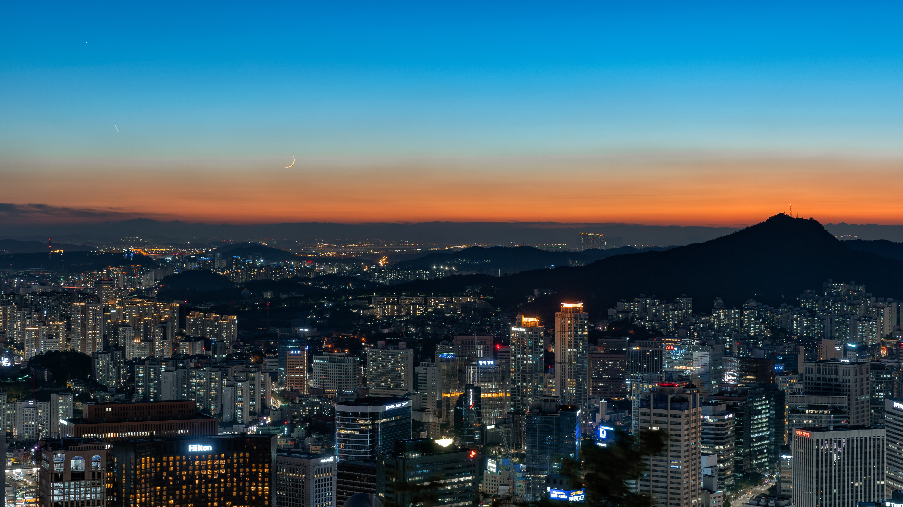

Seoul,officially the Seoul Special City, is the capital and largest metropolis of South Korea. With surrounding Incheon metropolis and Gyeonggi province, Seoul forms the heart of the Seoul Capital Area.
strategically situated along the Han River, Seoul's history stretches back over two thousand years, when it was founded in 18 BCE by the people of Baekje, one of the Three Kingdoms of Korea. The city was later designated the capital of Korea under the Joseon dynasty. Seoul is surrounded by a mountainous and hilly landscape, with Bukhan Mountain located on the northern edge of the city.
the Seoul special City| counter region | south Korea |
| districs | 25 |
| government | Mayor council |